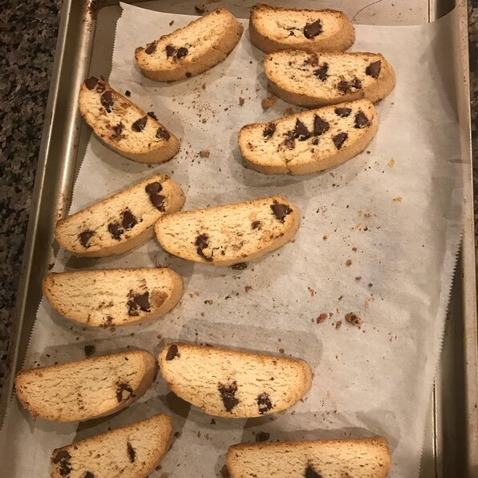

Description
This is a simple, no frills biscotti. My friend at work gave this recipe to me. It's quick, easy and one of my favorite Italian cookie recipes.
Ingredients
-
½ cup vegetable oil
-
1 cup white sugar
-
3¼ cups all-purpose flour
-
3 eggs
-
1 tablespoon baking powder
-
1 tablespoon anise extract, or 3 drops anise oil
-
1 (9 ounce) package no-boil lasagna sheets, broken into large pieces
-
1 cup water
-
½ teaspoon crushed dried rosemary
Steps
-
Preheat the oven to 375 degrees F (190 degrees C). Grease cookie sheets or line with parchment paper.
-
In a medium bowl, beat together the oil, eggs, sugar and anise flavoring until well blended. Combine the flour and baking powder, stir into the egg mixture to form a heavy dough. Divide dough into two pieces. Form each piece into a roll as long as your cookie sheet. Place roll onto the prepared cookie sheet, and press down to 1/2 inch thickness.
-
Bake for 25 to 30 minutes in the preheated oven, until golden brown. Remove from the baking sheet to cool on a wire rack. When The cookies are cool enough to handle, slice each one crosswise into 1/2 inch slices. Place the slices cut side up back onto the baking sheet. Bake for an additional 6 to 10 minutes on each side. Slices should be lightly toasted.